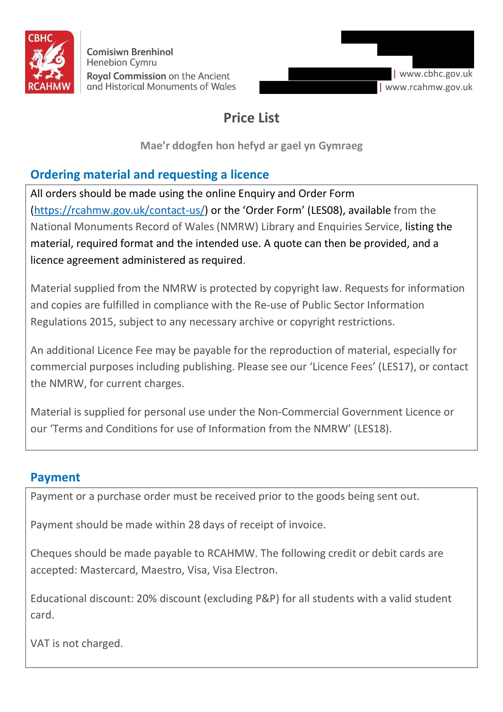

GHF-E106-R90-A1 substantive disclosure
LES16 Price List 2025.pdf

Transcript
[address redacted] [phone redacted] [email redacted] | www.cbhc.gov.uk [email redacted] | www.rcahmw.gov.uk Price List Mae’r ddogfen hon hefyd ar gael yn Gymraeg Ordering material and requesting a licence All orders should be made using the online Enquiry and Order Form (https://rcahmw.gov.uk/contact-us/) or the ‘Order Form’ (LES08), available from the National Monuments Record of Wales (NMRW) Library and Enquiries Service, listing the material, required format and the intended use. A quote can then be provided, and a licence agreement administered as required. Material supplied from the NMRW is protected by copyright law. Requests for information and copies are fulfilled in compliance with the Re-use of Public Sector Information Regulations 2015, subject to any necessary archive or copyright restrictions. An additional Licence Fee may be payable for the reproduction of material, especially for commercial purposes including publishing. Please see our ‘Licence Fees’ (LES17), or contact the NMRW, for current charges. Material is supplied for personal use under the Non-Commercial Government Licence or
Read more
our ‘Terms and Conditions for use of Information from the NMRW’ (LES18).
Payment
Payment or a purchase order must be received prior to the goods being sent out.
Payment should be made within 28 days of receipt of invoice.
Cheques should be made payable to RCAHMW. The following credit or debit cards are
accepted: Mastercard, Maestro, Visa, Visa Electron.
Educational discount: 20% discount (excluding P&P) for all students with a valid student
card.
VAT is not charged.
[address redacted]
[phone redacted]
[email redacted] | www.cbhc.gov.uk
[email redacted] | www.rcahmw.gov.uk
Search fees
Standard searches: (up to 15 working days)
Free
Complex searches: Enquiries which seek information about three or more sites, require
extensive searches of uncatalogued material, or request detailed summary of records’
contents.
Non-commercial
£20.00 per half hour
Commercial
£35.00 per half hour
Max. 3 hours (N.B.: Charges still apply in cases where searches are unsuccessful)
Please note that we will only undertake research within the holdings of the NMRW site
database and archive and RCAHMW library, although we may signpost to other record
holding institutions as appropriate. We may decline any complex enquiry which is
reasonably beyond out capacity to deliver. If you require the services of an independent
researcher, the National Library of Wales maintains a list of such providers, here:
(https://www.library.wales/catalogues-searching/help-to-search/family-history-
help/independent-researchers)
Aerial Photography Searches: charged at the same rate as complex enquiries. You will be
sent a list of your search results.
Basic Search (Indicates whether an aerial photograph was taken but not its medium or
availability, suitable for arranging a visit to view images in the Search Room)
Full Search (Indicates whether we hold physical or digital copies of each photograph,
suitable for ordering scans or copies of images)
As an indicator, a basic search for a single site within a defined timeframe will usually take
0.5–1 hour, with an additional 0.5–1 hour for a full search (charged at the same rate as a
complex enquiry). Larger or more complex searches may require more time. We will advise
you of the cost prior to proceeding with your search.
Priority search service (up to five working days)
£75.00
Payment for a priority search must be received prior to the searches being initiated and
must be paid for, even when no search results are found. N.B. This service is subject to
availability.
[address redacted]
[phone redacted]
[email redacted] | www.cbhc.gov.uk
[email redacted] | www.rcahmw.gov.uk
Dataset Requests: Basic National Monuments Record of Wales site data is freely available
to download under the Open Government Licence from Coflein, Historic Wales and
DataMap Wales. This includes both terrestrial and maritime data, and the data include
links to the long-text descriptions (where available). If you are experiencing difficulty in
locating, downloading, or searching this data, our Enquiries team will endeavour to offer
appropriate guidance.
Copying services (per copy)
We will waive fees for small orders (i.e. up to 5 low-resolution photocopier scans or
photographs taken by staff, for personal use only. N.B. This does not apply to existing digital
images).
Photocopies: up to A3
£1.50 per copy
Low-resolution photocopier scans or photographs taken by staff
£1.00 per scan/photo
Large orders will incur a surcharge of £15 for every 25 scans required.
Professional digitisation service (up to 15 working days)
Existing digital image (Maximum file size JPEG)
£10.00
Existing digital image (web-resolution, unwatermarked)
£1.00
New scan (Maximum file size JPEG)
£20.00
Please note that all professional digitisation is undertaken by the National Library of Wales.
The provision of this service is therefore dependent on their service provision, policies, and
charges.
N.B. Documents will not be copied if the item is too large, if it is in a fragile condition, or if
copyright restrictions apply.
Many of our existing digital images can be purchased and licenced directly through our
online system: https://rcahmw.ibase.media/en/home
[address redacted]
[phone redacted]
[email redacted] | www.cbhc.gov.uk
[email redacted] | www.rcahmw.gov.uk
Virtual visits and one-to-one consultations via Microsoft Teams
Virtual Visit: If you are unable to visit our Library and Search Room in person, we offer free
‘virtual visits’. During these virtual visits you will be able briefly to view documents and
records from the NMRW archive so that you can identify any documents of which you
would like to order scans or copies, or determine if a full, in person visit to our Search Room
is necessary.
20 minute virtual visit
Free
Online Consultation: If you require a bit more assistance and discussion, you can book an
online one-to-one consultation with a member of staff. During these sessions we are happy
to discuss your research with you and recommend sources from our library and archive,
show you documents from the NMRW related to your research and provide guidance on
where to go next.
40 minute one-to-one consultation with a member of staff
£25
N.B. We are unable to undertake research of documents on your behalf or read out lengthy
passages from them via the virtual consultation. If you would like to commission a search or
require this sort of detail, please contact us.
Due to the time available, we will only be able to show you a limited number of documents.
They will not be held up or handled in any way that may cause damage.
Documents must be ordered in advance and cannot be retrieved during the session.
Sessions may be booked every Monday or Friday.
[address redacted]
[phone redacted]
[email redacted] | www.cbhc.gov.uk
[email redacted] | www.rcahmw.gov.uk
Group visits
We welcome group visits to the Library and Search Room, by prior arrangement. These
typically last between one and two hours and are tailored to the interests of the
group. However, a visit usually consists of talks, a display of archive material and a tour of
our archive strongrooms.
We also provide virtual group visits and talks, which can be tailored to an individual group’s
interests.
We welcome visits from primary and secondary schools, universities, youth groups, local
and family history groups, specialist interest groups, civic societies and professional
bodies. We can host sessions through the medium of English or Welsh.
Free, but subject to availability. Please contact us to discuss.
Prices are charged in accordance with the Re-Use of Public Sector Information Regulations
2015 and Managing Welsh Public Money
Croeso i chi gysylltu â ni yn Gymraeg. Byddwn yn ymateb yn Gymraeg, ac ni fydd
hynny’n arwain at oedi
You are welcome to contact us in Welsh. We will respond in Welsh, without this
causing delay
LES16: 2024Artifact description
Provides site details, a list of 14 related archives, search room access information, and related external record links.
| Catalogue ID | GHF-E106-R90-A1 |
|---|---|
| What it is | PDF document from RCAHMW (Royal Commission). Attached to an email received on 26 November 2025, their reference RC25-0464. 5 pages. |
| From | RCAHMW (Royal Commission) |
| Email received | 26 November 2025 |
| Their reference | RC25-0464 |
| Pages | 5 |
| File | LES16 Price List 2025.pdf (213 KB) |
| State | Read |
Our integration
Part of the records enquiry thread with RCAHMW (Royal Commission) opened 26 November 2025. The thread's standing classification is “substantive disclosure”. Statutory time: no statutory deadline.
Concern to test: whether this reply answers the question as asked, or a narrower one. Not checked against the original request wording here.
Related: The covering email · EV-0429 in the evidence catalogue · Timeline · Disclosure Dartboard